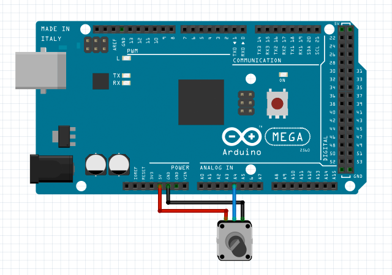
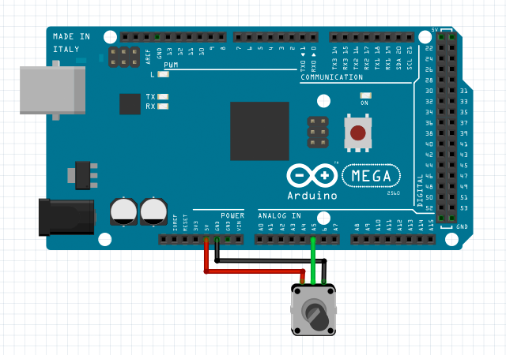

var potentiometer1 = new AnalogIn();
// set up a analog input with pin A4 on unit 1
potentiometer1.setup(1, Arduino.MEGA.A4);
// get the present potentiometer value
potentiometer1.whenGetValue = function(value) {
alert( "potentiometer value is " + value );
};
potentiometer1.getValue();
// start a monitor to detect the potentiometer value updating
potentiometer1.whenUpdateValue = function(value) {
document.getElementById("status").innerHTML = "potentiometer value is " + value;
};
potentiometer1.startMonitor(200); // for value updating every 200 milliseconds

var potentiometer2 = new AnalogIn(); // set up an analog input with pin A5 on unit 1 // and enable a filter potentiometer2.setup( 1, // unit 1 Arduino.MEGA.A4, // pin A4 5, // filter level 5 2000, // sampling interval is 2000 microseconds ); // start a high sensitive monitor to detect the potentiometer value changing potentiometer2.startMonitor( 10, // the minimum value updating interval is 10 milliseconds 16, // emit value updating callback when any bit of the raw analog input 16-bit value is changed ); // start a low sensitive monitor to detect the potentiometer value changing potentiometer2.startMonitor( 100, // the minimum value updating interval is 100 milliseconds 6, // emit value updating callback only when high 6-bit data (MSB) of the raw analog input value is changed );
Analog Value
Any analog value handled in h5control is a 16-bit unsigned integer number.
In other word, the minimum analog value is 0, and the maximum analog value is 65535.
Using Filter
In order to obtain analog input value with smooth changing, the filter should be enabled.
Usually, a smoothing analog input value is automatically calculated by the filter routine using weighted average of all sampling value in one test cycle.
Two optional setup parameters filter level and sampling interval need be set for the analog input filter. filter level is the continued sampling times for a smoothing readout, and sampling interval is the interval time in microseconds between each sampling.
Monitor Sensitivity
If need obtain analog input value efficiently with a monitor,
to set the sensitivity for the monitor is required.
Two optional sensitivity parameters updating interval and significant bits need be set for the analog input monitor. updating interval is the minimum interval time in milliseconds to emit the callback for the value updating. And, the monitor routine detects analog input value updating in the specified significant bits, ignores the insignificant interference as well.
AnalogIn
setup(unit, pin, filterLevel, samplingInterval)
initialize an analog input object with a specified pin on a specified unit.
filterLevel and samplingInterval is optional parameters to enable a filter of the analog input.
info
return value: true if successful, otherwise false.
getValue()
request to get the present value of the analog input signal,
an event callback whenGetValue() will be received later.
return value: the analog input value, a number between 0 to 65535.
startMonitor(updatingInterval, significantBits)
start a monitor to detect the analog input value updating.
parameter updatingInterval is in milliseconds, significantBits is a number between 1 to 16.
info
return value: true if successful, otherwise false.
stopMonitor()
stop the monitor to detect the analog input value updating
return value: true if successful, otherwise false.
Return Value Note:
The function will return a value when your h5control program uses waitRsp mode, but no return value when uses nowaitRsp mode.
whenSetup(done)
receive the callback when setup done. parameter done is true if successful or false otherwise.
whenGetValue(value)
receive the callback to get the present analog input value after called function getValue().
whenStartMonitor()
receive the callback to confirm the monitor is started after called function startMonitor().
whenStopMonitor()
receive the callback to confirm the monitor is stopped after called function startMonitor().
whenUpdateValue(value)
receive the callback when the analog input value is updated after started the monitor.
Arduino.UNO
analog input pins on Arduino UNO or other ATmega328-based board:
A0
A1
A2
A3
A4
A5
A6
A7
Arduino.MEGA
analog input pins on Arduino MEGA board:
A0
A1
A2
A3
A4
A5
A6
A7
A8
A9
A10
A11
A12
A13
A14
A15
Arduino.DUE
analog input pins on Arduino DUE board:
A0
A1
A2
A3
A4
A5
A6
A7
A8
A9
A10
A11